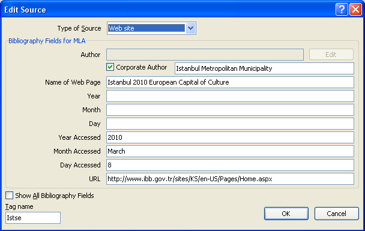
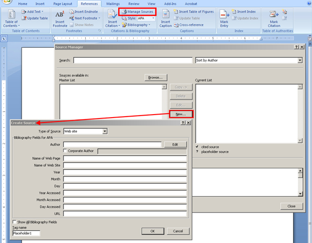

Congratulations, you are the successful candidate for the position advertised by What a Wonderful World Travel! Your first task is to format a report for a tour of Turkey and Greece.
Step 1: Open the Report document
Step 2: Save the document as “Report” in your INF2050: WP 2: Final Project folder.
Step 3: Use Styles to format the report.
Step 4: After the first sentence of the report, which discusses the population, insert a citation using the following information:

Microsoft product screen shot(s) reprinted with permission from Microsoft Corporation.
Step 5: Use the Manage Sources command in the Citations & Bibliography group in the Reference tab on the Ribbon to add two additional references for the bibliography.

Microsoft product screen shot(s) reprinted with permission from Microsoft Corporation.
Reference 1
Corporate Author: Hellenic Republic. Ministry of Tourism. Greek National Tourism Organization.
Name of Website: Greece the True Experience.
Date: (use current date)
Web address: <http://www.visitgreece.gr/>
Reference 2
Corporate Author: Istanbul Metropolitan Municipality.
Name of Website: Istanbul 2010 European Capital of Culture.
Date: (use current date)
Web address: <http://www.ibb.gov.tr/sites/KS/en-US/Pages/Home.aspx>
Step 6: Create the bibliography page.
Step 7: Create an index, marking 10 entries of your choice.
Step 8: Select something interesting from the report and keyword-search the Internet for an appropriate Web site on this topic (e.g., the Parthenon).
Step 9: Hyperlink the text to the corresponding Web site you researched.
Step 10: Create a title page, including information pertinent to your report. Insert an appropriate graphic from clip art or by searching the Internet.
Step 11: Create a table of contents page.
Step 12: Review the document layout and apply appropriate content-control features, such as widow/orphan control, page breaks, and section breaks. (Remember to apply a next-page section break on the table of contents to allow for proper pagination.)
Step 13: Properly paginate the report in the footer — no page number on the title page, a roman numeral on the table of contents, no page number on the first page of the report, include page numbers on the rest of the report.
Step 14: Include any other important information, such as the company’s name, in the header or footer.
Step 15: Review the final document and make any necessary adjustments.
Step 16: Set the Document Properties, adding information pertinent to the document.
Step 17: Save the final report.
/75 Marks